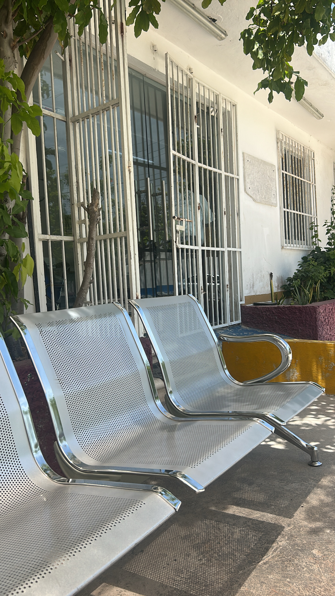
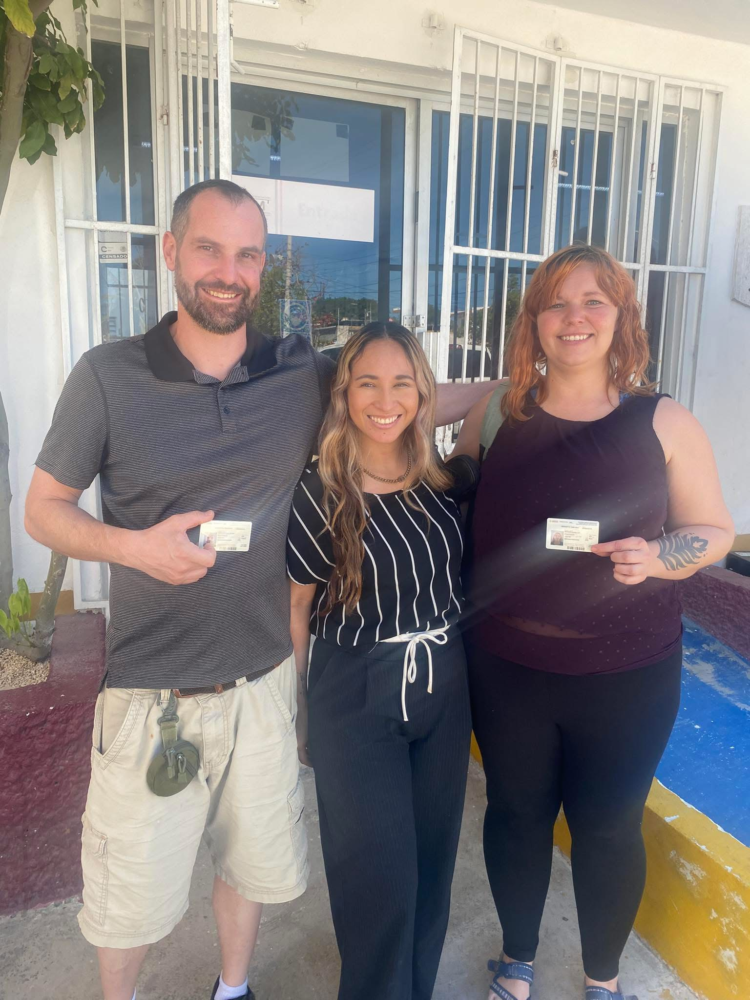
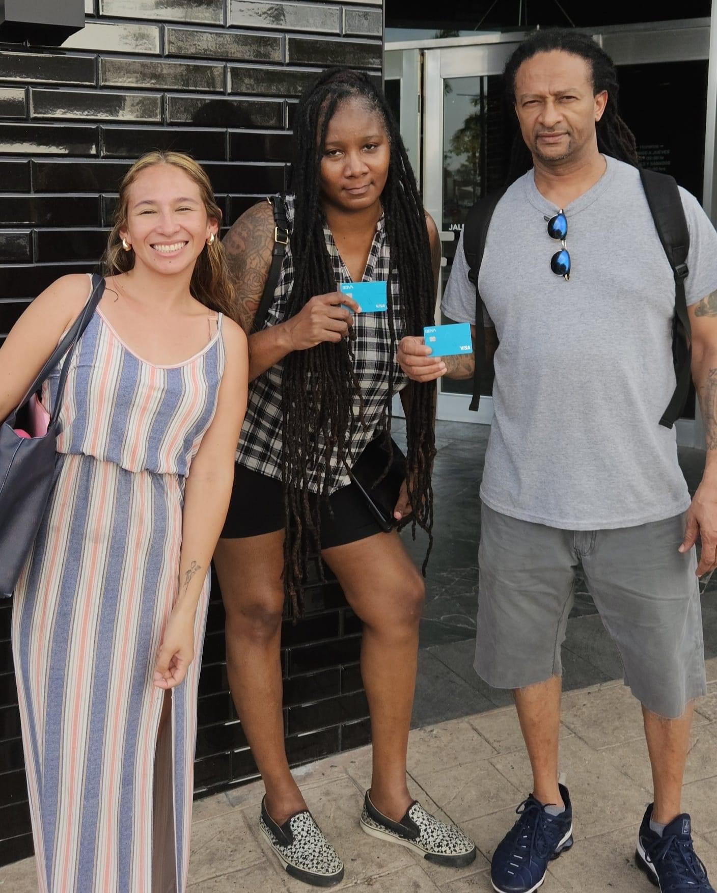
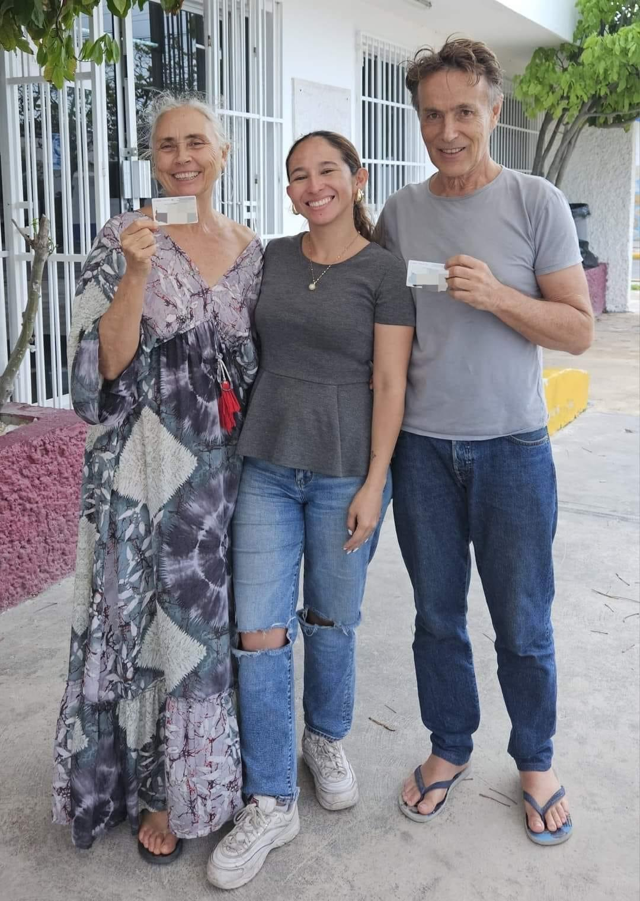
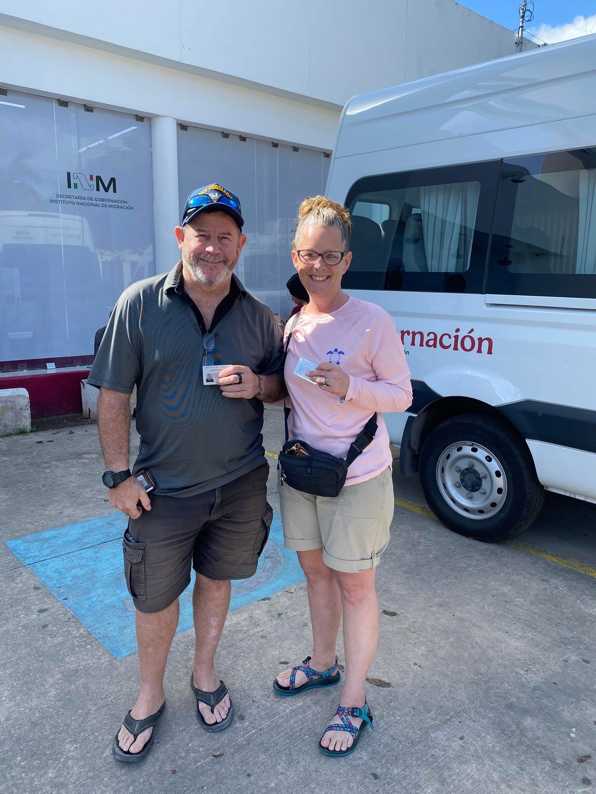
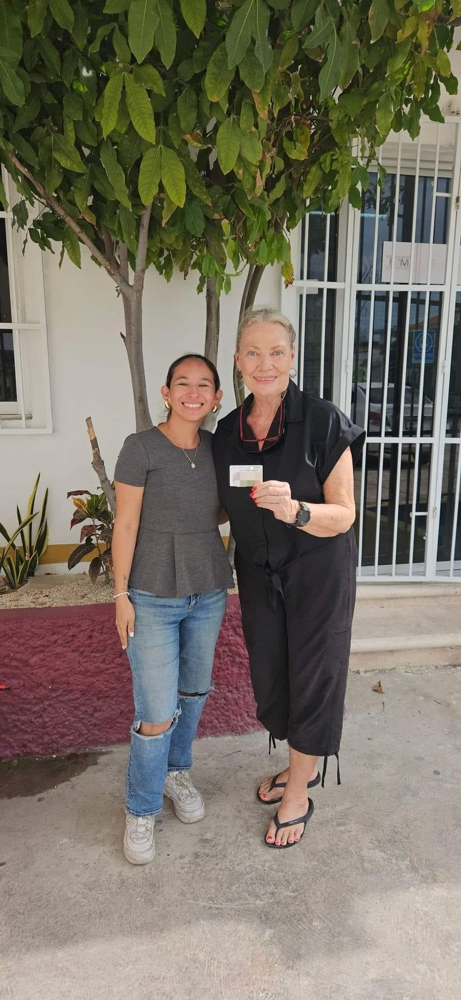

Mérida & Progreso, Yucatán · Relocation & Residency Specialist
Get your Mexican residency
the right way.
Personalized guidance through every step of your immigration and relocation process — so your move to Mexico feels exciting, not overwhelming.
How I can help
Certified relocation specialist support, from your first appointment to life fully settled in Mérida.
Residency Applications
Temporary and permanent residency applications and renewals, handled start to finish.
Immigration & Document Guidance
Document preparation and visa application support, reviewed carefully so nothing gets rejected.
RFC Assistance
Help registering for your RFC (Federal Taxpayers Registry), a key step for banking and daily life in Mexico.
Bank Account Opening
Guidance opening a Mexican bank account, with the right paperwork ready in advance.
Real Estate & Property Management
Support finding a home in Mérida and ongoing property management once you're settled.
Relocation Assistance
Full relocation support for individuals and families, plus advice before and after your move.
I take care of everything
From the U.S. to your new life in Mexico — here's how the residency process works with me.
Consulate Appointment
I secure your appointment at the Mexican Consulate in the U.S.
Document Review
I review your documents to make sure everything is correct and complete.
Exchange in Mexico
I assist you with the exchange process in Mexico so you can receive your residency card.
I'll guide you every step of the way, so you can enjoy the benefits of living in Mexico with peace of mind.

About Jenni Alvarez Relocation Services
Moving to Mexico should be exciting — not overwhelming. I help expatriates, retirees, digital nomads, families, and remote workers relocate to Mérida, Progreso, and the surrounding Yucatán coast with confidence.
I provide personalized guidance through every step of the immigration and relocation process, making your transition as smooth and stress-free as possible — every client gets honest communication, reliable support, and a service tailored to their unique situation.
Whether you're still planning your move or already in Mexico, I'm here to help you navigate the process with clarity and peace of mind.
Proudly serving clients across Mérida, Progreso, and the greater Yucatán Peninsula.
Let's talk about your moveReal clients, residency cards in hand
A few of the people I've walked through the process, right outside the immigration office in Mérida.





"I cannot recommend Jenni enough! She is an incredibly knowledgeable, bilingual relocation specialist who made moving to Mexico an absolute breeze. She perfectly guided my husband and I through every step of getting our residency, opening a local bank account, and securing our RFC. Having her translate and explain everything made it seamless and completely stress free."
"Excellent service — Jenni is very professional, and in a short time I got my permanent residency in Mexico. Thank you, Jenni, I highly recommend her!"
"Jenny is an incredibly helpful person who goes out of her way to assist others. Whether it's offering guidance, sharing valuable insights, or simply being there to support when needed, Jenny consistently demonstrates a genuine desire to help. Highly recommended!"
Renewing or switching to permanent status?
A few tips before you start.
1. Start early
You can begin the process one month before your expiration date. The sooner you start, the better your chances of getting it — waiting until the last minute leaves no room for errors or rejections, and if your residency expires while you're in Mexico, you'll have to start over from scratch.
2. Appointments are online
Renewals and changes to permanent residency are done through the immigration system's online appointment calendar.
3. Plan ahead
There's a three-week lag in the appointment calendar. I recommend starting the scheduling process about a month before expiration.
4. Requirements may have changed
Many people who obtained residency under a previous administration weren't required to submit certain documents that may now be mandatory. Scheduling in advance helps you avoid surprises.
5. Keep your information updated
All your details must match what you originally registered with immigration, including your address. If you've moved, you'll first need to file a change-of-address notification — a separate procedure that also requires an online appointment.
6. Plan your travel
If approved, your new residency card is usually issued the same day, but delays can happen. Schedule any travel a few days after your appointment — otherwise you'll need an "exit permit without residency" and won't receive your card until you return to Mexico.
Frequently asked questions
Common questions before you get started.
How long does the residency process take?
It varies by case, but a typical temporary residency process runs a few months from your consulate appointment to receiving your card in Mexico. I'll give you a realistic timeline once I know your specific situation.
What's the difference between temporary and permanent residency?
Temporary residency is granted for a set period and can usually be renewed or upgraded; permanent residency has no expiration date. Which one fits you depends on factors like income, savings, family ties, or retirement status — I'll help you figure out which path applies.
Do I need to start the process in the U.S., or can I begin once I'm already in Mexico?
Most residency applications start with an appointment at a Mexican consulate outside Mexico. If you're already here on a tourist visa, we can talk through your options.
Do you only work with clients in Mérida?
No — while my office is in Mérida, I regularly work with clients relocating to Progreso and other communities across the Yucatán coast, in person and remotely.
What documents will I need?
This depends on the type of residency and your personal situation, but generally includes a valid passport, proof of income or savings meeting the current consulate requirements, and supporting documents like birth or marriage certificates for family applications. I review everything with you before your appointment so nothing gets rejected.
Can my family apply together?
Yes. Spouses and dependent children can generally apply as a family unit, and I coordinate the paperwork and appointments for everyone together.
Ready to get started?
Your new life in Mexico starts here. Let's make it simple.
We assist clients worldwide — schedule your consultation today.